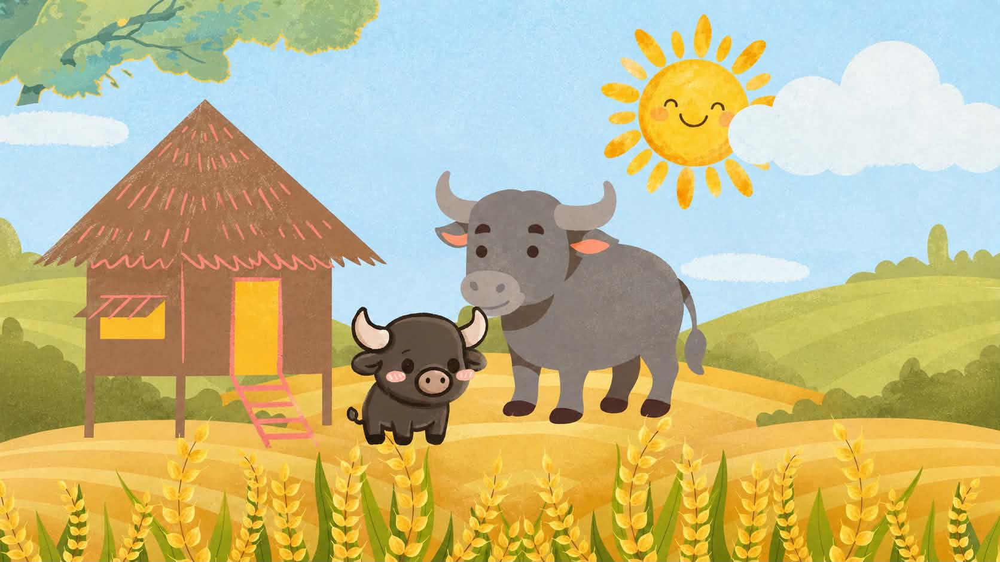
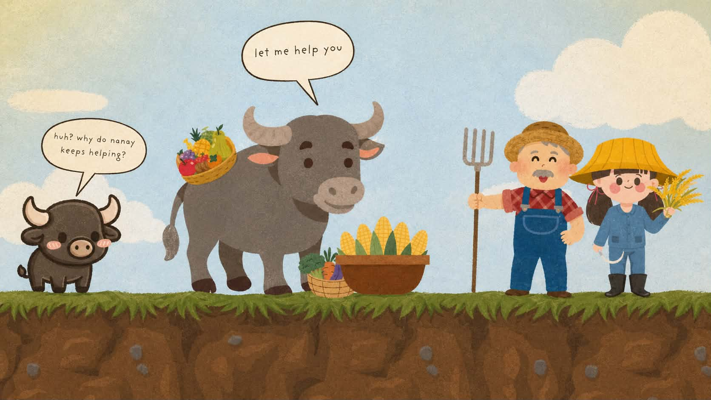
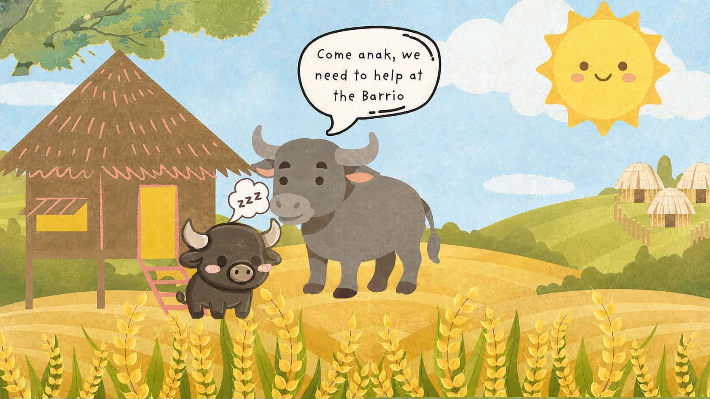
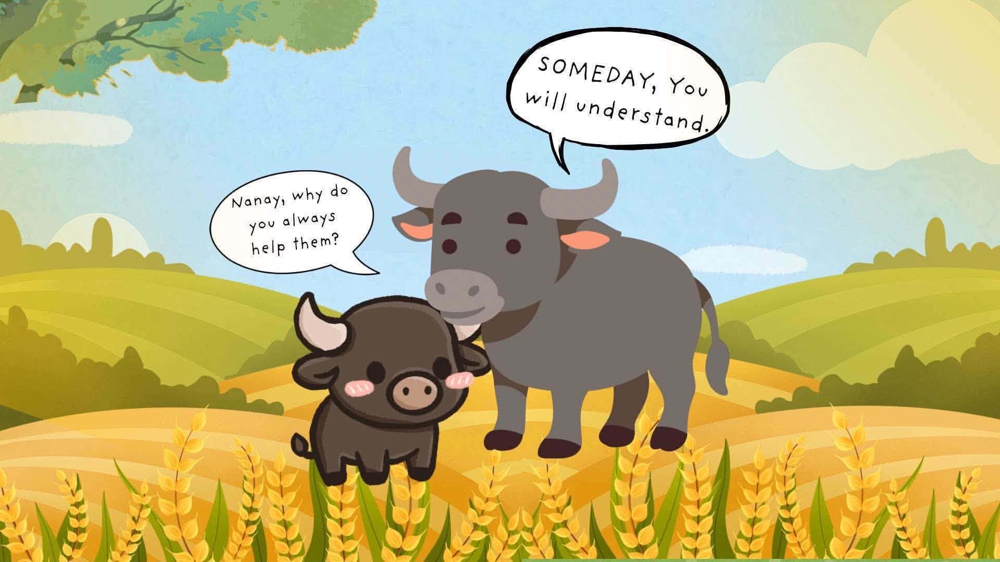
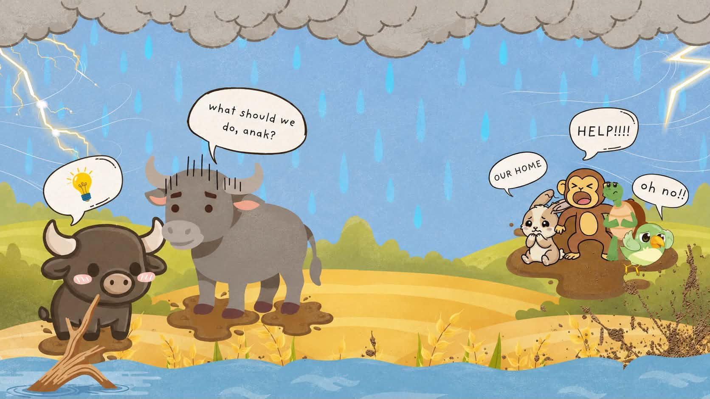
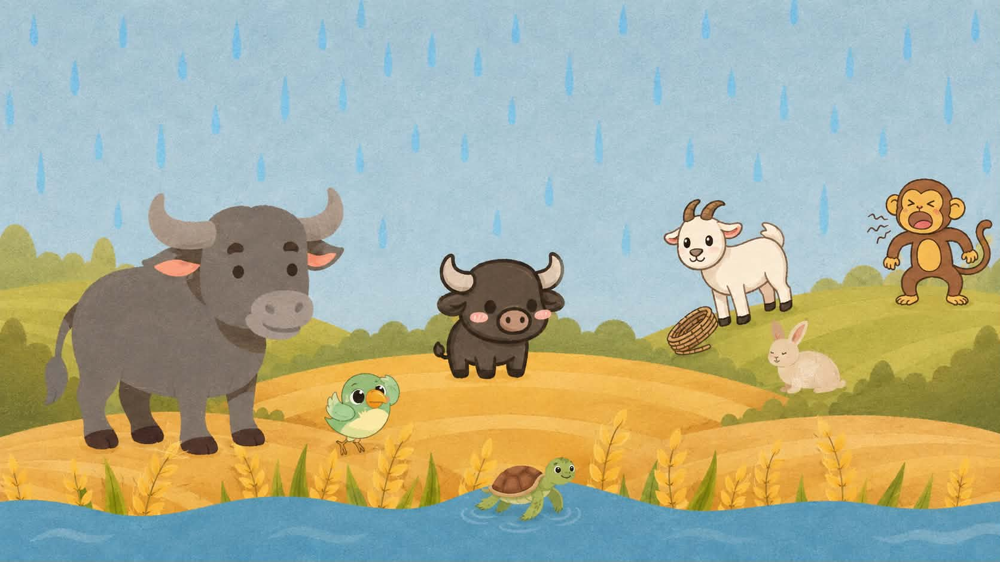
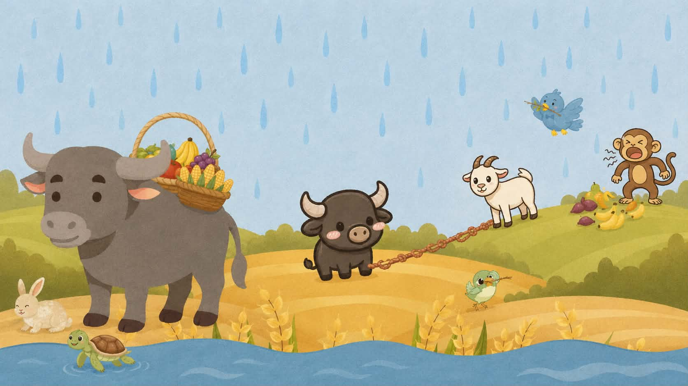
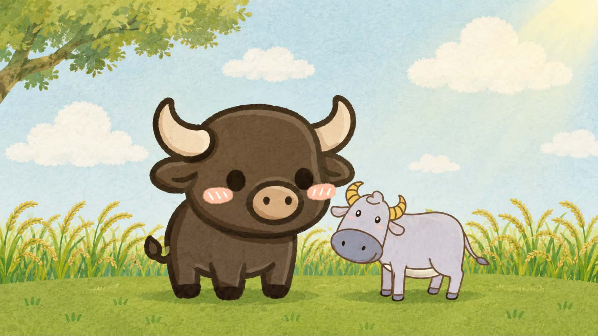
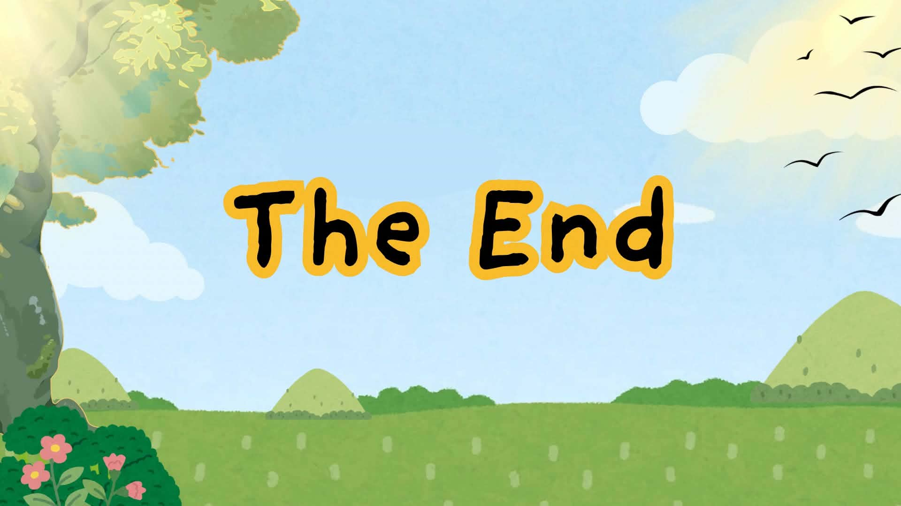

Story 01
Someday, Little Carabao Will Know
The story reflects the Filipino value of bayanihan, where people help one another and share their strength, especially during difficult times.

Great Book · Story 01
Someday, Little Carabao Will Know
00:00 --:--
The narration for this story has not been recorded yet.
Narrated by Hershey Mangahas, Sabina Kristina Nuestro, and Ryan Sagun
In a quiet Filipino village surrounded by green rice fields, where the air whistles softly, there lived a young carabao named Bago and his mother, Nanay Tala. Every morning Nanay Tala would wake early, earlier than the sun, and she would wake Bago before the sun rose. “Come, anak, we need to help at the barrio,” she would say.


Bago would follow his mother through the village, but he would often wonder why she always stopped to help others.

She helped the farmers carry heavy bundles of vegetables. She would share their food with hungry goats. She would help the smallest animals cross the muddy road.

One morning Bago asked, “Nanay, why do you always help everyone? What benefit will you receive? Aren’t you tired?” Nanay Tala smiled. “Of course I get tired, anak, but life is easier when we help one another.” “But what if they never help us back?” Bago asked. Nanay Tala gently touched his head with hers. “Helping is not always about getting something in return. Someday you will understand.” But Bago did not completely understand.


As the years passed, Bago grew bigger and stronger. One rainy afternoon a strong storm flooded the village. The animals struggled to move their food and belongings to a safer place. Bago stood at the edge of the field. He remembered all the times he had watched his mother help others. Then he stepped forward. “Come on, let’s help each other,” he called. There, the animals worked together, the birds carried small twigs, the goats pulled ropes, the monkeys gathered the food, and Bago used his strength to carry the heaviest things. By the time the rain stopped, everyone was safe.


Upon looking, Bago saw Nanay Tala watching her son with a proud look. “You finally understand. That someday has finally arrived,” she said. Bago looked at her. “I think I do, Nanay,” he answered. “What did you learn?” Bago smiled. “That being strong isn’t only about being able to carry something heavy.” He looked around. “Sometimes being strong means being there for someone who needs you.” Nanay Tala smiled. “That is what bayanihan means, anak.”


Years later, Bago would become a father himself, and whenever his son asked why he always stopped for others, Bago would always answer, “Someday, you will understand.” And just as his mother had taught him, he would teach his child that no one should have to carry life’s burdens alone, because at the end of the day, bayanihan exists, and every person has a heart willing to lend a hand. For in every helping hand a little kindness is passed on, and through every act of kindness the love of a person lives on.

Check what you remember
-
Who is the main character of the story?
- Bago
- Goat
- Cat
- Monkey
-
Who is Bago’s mother?
- Nanay Maya
- Nanay Tala
- Nanay Luna
- Nanay Rosa
-
What did Nanay Tala always do?
- Sleep
- Play
- Help others
- Travel
-
What happened to the village?
- A strong storm flooded the village
- It became very hot
- The animals left
- Nothing happened
-
What Filipino value did Bago learn?
- Katamaran
- Pagmamataas
- Bayanihan
- Pagiging makasarili